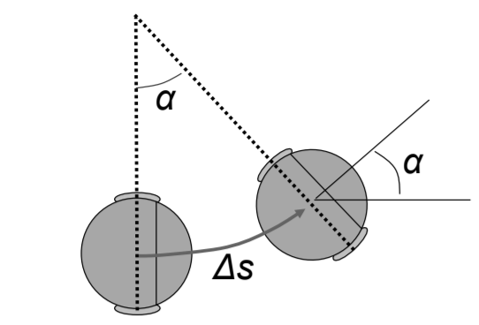
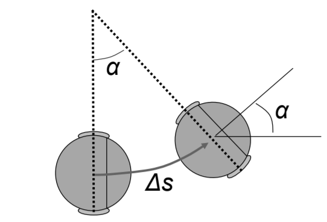

Movement from:

Odometry telemetry:
 (absolute at time
(absolute at time  )
)This paper defines not only control theory for 4 wheel fixed-differential drivebases in VEX/FRC, but in any general application. Anywhere precise drivebase sensors are located, odometric measurements (absolute), velocity, and acceleration can be determined and used to construct movement profiles. Vision tracking and LIDAR are rigorous alternatives to Odometry, however they require more extensive tuning and difficult integration with motion profiles. Documented here is are most applicable and innovative processes for achieving desired movement in any system.
Many of these implementations were over the course of program development in team 6627A, during my time as head programmer and captain.
Odometry theory is more generally defined as high-level position tracking
Basic implementation, relative to start pos. (0,0)
- Field-relative rather than bot-relative, reducing accumulated errors. To increase precision, it is best to minimize precise stops and merge movements together (discussed later as
pure pursuit control) and follow paths
Model is defined as:
Movement from:
Odometry telemetry: (absolute at time )
(1) Change in average radius, in terms of inner and outer radius, is used to calculate change in center of 4 wheel system


 

These values can be used to create a vector representing absolute position difference (delta x, delta y, delta theta) between last state (assuming non-steady state)


Interactivity depends on derivative constant  as well as the dependence between proportional, integral and derivative modes. Parallel (non-interactive) controllers, are mostly unused. PID controllers are given by the alg.:
as well as the dependence between proportional, integral and derivative modes. Parallel (non-interactive) controllers, are mostly unused. PID controllers are given by the alg.:


e multipled by proportional constant K_p, rendering output proportional to errorΔt, then multipled by constant K_i. Renders the output on accumulation of past errors of error
of error e (calculated as prevError - error) normalized over update frequency (e.g. Δdt = 10hz) then multiplied by derivative constant K_d. Renders output on basis of error rate of changeK_f. Used less in PI/PID loops, more in motion-profiling velocity loops to determine initial outputSituation in PID loop where a large change in setpoint offests large rise (windup) in integral term i
 Figure 1.0 Comparison of anti-windup strategies and setpointing
Figure 1.0 Comparison of anti-windup strategies and setpointing
Also known as conditional integration, uses technique to clamp range of integral output from accumulating in wrong direction during output saturation.
process saturation: situation in which PI controller becomes non-linear and unbounded
(1) integral anti-windup (2) gain scheduling (3) setpoint weightingTrivial unwind calculations for small changes in error, using clamping
#define unwind 0.001 // 0.001 -> 0.005
if((error > 0.0 && errTot < 0.0) || (error < 0.0 && errTot > 0.0) || fabs(error) < 0.001){
if((fabs(error) - unwind) > -0.001) errTot = 0.0;
}
if(fabs(unwind) < 0.001 && fabs(error) < 0.001) errTot = 0;
Using feedback difference |u-v| as input for integral. Back-calculating integral to constrain process output before feeding into integral. According to Fig. 1.0, back-calculation typically results in underaccumulation and drop-off
Tuning of constants and sensors is crucial to long-term accuracy and oscillation-reductions
The general strategy for non-feedback controllers involves:
I and D to zero, P to a small (to be increased) valueP until oscillations are reducedD until oscillations are nearly minimizedS-S) error (setpoint never reached) observed, decrease P / increase D and add IFor feedback controllers:
Most systems, particularly subsystems of systems, do not need I or D depending on the movement and relationship between target and current state
Behaviorial effects of increasing Kp, Ki, Kd, on general equation of interactive PID

| Response | Rise Time | Overshoot | Settling Time | S-S Error |
|---|---|---|---|---|
| Kp | decrease | increase | *NC | decrease |
| Ki | decrease | increase | increase | eliminate |
| Kd | *NC | decrease | decrease | *NC |
NC: Negligable change

Pursuit comes in two different forms: adaptive and pure pursuit. "Pure" refers to pursuit directed purely on the basis of lookahead. However, "adaptive" pursuit modifies the look-ahead point over larger distances e.g. proportionally scaling lookahead with tracking error
Debately the best method of autonomous control (competitive scenarios) beacuse of overall reliability, accuracy, and abililty to alter paths on the fly
proportional gain normalized by fixed lookahead distance L. The curvature of movement comes from PI on heading rather than distance :  determines the average curvature
determines the average curvature C on the path
L result in overall instability | solved with feedforward controllers (PIDFs)Warning: Increasing lookahead distance on unsmooth curves will cause corner-cutting

Figure 1.1 Pure pursuit, no adaptivity
monotone arc length assumption, efficiency can be increased by not having to search the entire length of the path for a lookahead, but rather using a local headingFigure 1.2 Adaptive Lookahead, advanced off-path correction
The spacing of points along a path (predetermined) can be placed with minimal padding to increase the accuracy of velocity setpoints. Smoothing is best achieved with an increased quantity of points. Injection algorithms determine the spacing between points and pre-calculate the points along a pre-determined segment
padding = // padding between points
v_gen_points = // generated points
for segment in path:
vector = endpt - startpt
points_in_range = ceil(magnitude(vector) / padding)
vector = normalize(vector) * padding
rep(i, 0, points_in_range):
v_gen_points.append(startpt + vector*i)
Smoothing can be achieved through several methods. Most common is through an optimization of points by returning a set of points that create a smooth trajectory.
The following algorithm uses gradient descent with a low tolerance:


""" path: set of path coords.
weight_data: weight to update data (alpha)
weight_smooth: weight to smooth coordinates (beta)
tolerance: iteration delta """
newP = deepcopy(path) # smoothing each element in path
delta = tolerance #0.00001
while delta >= tolerance:
delta = 0.0
for i in range(1, len(newP) - 1):
for j in range(len(path[0])):
x_i = path[i][j]
y_i, y_p, y_n = newP[i][j], newP[i - 1][j], newP[i + 1][j]
y_i_saved = y_i
y_i += weight_data * (x_i-y_i) + weight_smooth * (y_n+y_p - (2 * y_i))
newP[i][j] = y_i
delta += abs(y_i - y_i_saved)
return newP
Alternatives e.g. 5th-degree splines work for this approximation :

Trivial distance calculation, start at lowest index such that following closest points are sequential
Point P separated by a lookahead distance from the current position. This point is determined by taking a circle with radius lookout distance and computing the intersection of the path and the circle (line segment collision detection on circles).


Figure 1.3 Red circle defines the lookahead point lookahead distance from the center of movement
Motion profiling is similar to the path generation of pursuit algorithms, in that a series of points are given as input, and a smoothed, curved path is computed as output. However, profiling involves returning a path with parameters of acceleration and deceleration passed directly into motion functions. The steps to the this generation are as follows:
(1) Generating smoothed curve using techniques as defined in path pursuit
(2) Calculting position through odometry functions
(3) Generating acceleration along the curve
Smoothed curves are generated through the fucntional input to cubic bezier curves. Linear interpolation is a common method to determine a common pivot between two points. All adjacent points are interpolated until none remain
(1) 1D linear interpolation

(2) 2D linear interpolation given two points P1, P2


Figure 1.4 Guided cubic Bezier curve between two points
Bezier curves require a combination of interpolation at two end points, and approximation of the inner control points. For larger sets of points, a single curve can not accurately represent a smooth path because of derivative scaling. However, a solution involves splines through quintic Hermite splines which alot for multi-segmented curves. At joint points in the spline, a tanget rather than a control point is specified which reliable smoothes those points and maintains first derivative which cubic Beziers are unable to provide.
Given a standard trapezoidal velocity profile, the points given non-standard acceleration are near the start- and end-points. Using two-step PID loops on acceleration, a jerk-proof profile can be achieved which minimizes the third-derivative of position and further smoothes motion.
Trapezoidal profiles can be represented as simple kinematic equations:


Jerk is defined as transitional changes in acceleration, that produce vibrational forces and jolted acceleration. Jerk-reducing profiles are difficult to tune as their deceleration stages must follow the limitations of hardware without significantly increasing settling time or accuracy at slow speeds. Jerk profiles include several more stages than simple trapezoidal profiles:
(1) linearly increasing accelearation to reach maximum acceleratoin (often guided by second-stage feedback controllers)
(2) as system approaches maxVacceleration must settle (3) acceleration is constant at peak velocity until the inverse of (1) and (2) occur until final settle
S-curve / Jerk-reduced profiles are represented as:


Figure 1.5 S-Curve Profile
The final profiles sent to wheels is procaessed first through a series of offset conversions that returns a requirement for each point P in the form (position, velocity, acceleration) at time t. This point data is fed into the feedback controller and translated to scaled motor input.
In a single system the previous implementations can be implemented in the following way:
(1) Pre-calculated paths and smoothing constants
(2) Path data is read, and curvature and velocity setpoints are computed
(3) Using odometry, the lookahead point is calculated and absolute positioning is maintained
(4) Curvature, closest point, lookahead, wheel velocities, and telemetry are all tracked in real-time
PID, State-spaces, feedforward and motion profiling, and pursuit methods all define a broader spectrum of control theory that is applicable to more than purely robotic applications (e.g. self-driving cars, AI-based intelligence). Modern multi-in-multi-out control systems are founded on these concepts and continue to be developed.